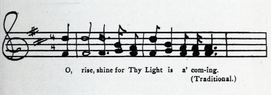
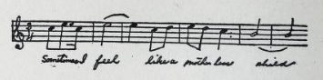
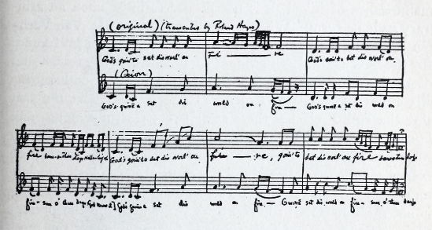
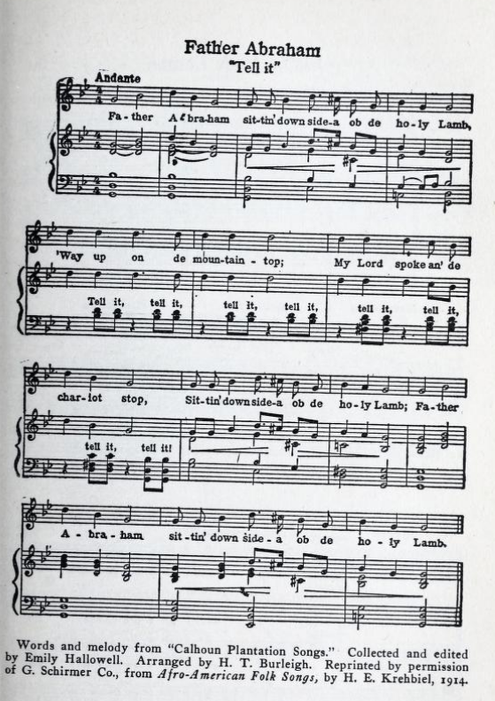
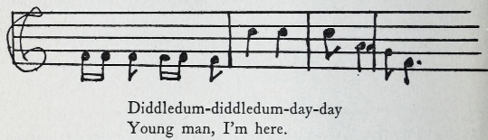
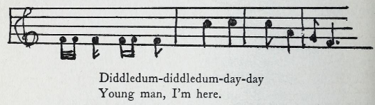
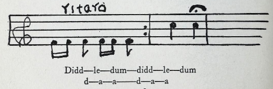
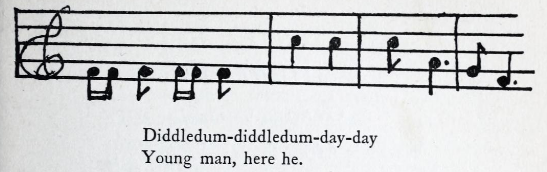
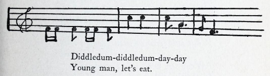
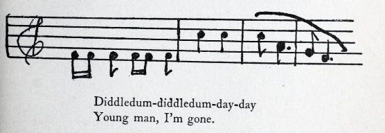

Music
Music in the Collection
The Younger Generation

The Younger Generation
Source Code
Upon Hearing His

Upon Hearing His
Source Code
The Negro Spirituals
Hayes
Guion

The Negro Spirituals
Hayes Source Code
Guion Source Code
Father Abraham "Tell It"

Father Abraham Tell It
Source Code
Brer Rabbit Fools Buzzard

Brer Rabbit Fools Buzzard Piece 1

Brer Rabbit Fools Buzzard Piece 2

Brer Rabbit Fools Buzzard Piece 3

Brer Rabbit Fools Buzzard Piece 4

Brer Rabbit Fools Buzzard Piece 5

Brer Rabbit Fools Buzzard Piece 6
Source Code